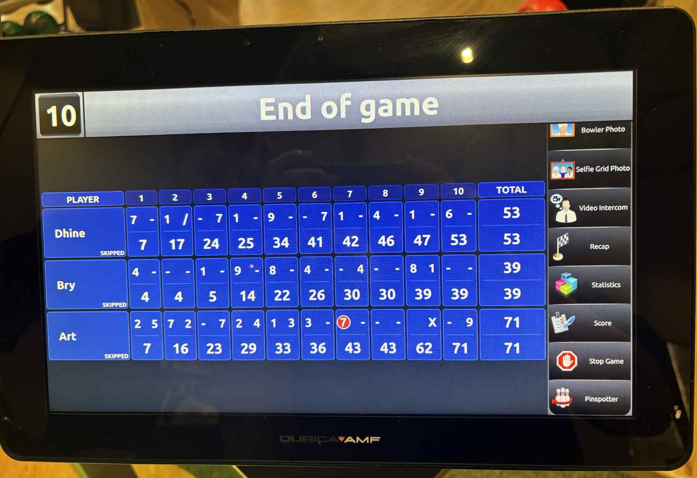

Bowling Chronicles
Noong nakaraan, naglaro kami ng bowling. Sa totoo lang, akala ko madali lang pili ng bola, konting takbo, bitaw, tapos magic na lang kung strike o gutter. Pero iba pala pag ikaw na yung nasa lane.
Una, challenge pa lang yung pagpili ng bola. Yung easy, parang laruan lang halos madulas sa kamay. Yung medium, sakto lang sa buhat pero minsan biglang parang mabigat na bato. Yung heavy ball naman, parang may gustong ipahamak sayo kasi habang hawak mo siya, pakiramdam mo buo mong kaluluwa ang kasama.
Pero eto yung nakakatawa: may isang round, ako lang yung naka-perfect strike. As in lahat ng pins, bagsak. Strike pa more! Ang saya ng tunog nung “kraaashhh” na parang fireworks sa tenga.
Yung mga kasama ko? Hahaha, sorry guys pero karamihan ng bola nila, derecho gutter. Imagine mo tatlong sunod-sunod na tira sabay sabay pa kami nagtitinginan tapos walang tumatama sa pins. Parang bowling lane yung nananalo, hindi kami. May isa pa nga na parang may sariling buhay yung bola kasi kahit anong effort niya na itama, dumidiretso pa rin sa gutter.
Doon ko narealize na iba talaga yung mix ng swerte, timing, at konting diskarte. Minsan kahit anong pilit mo, hindi talaga tatama. Pero may mga pagkakataon din na biglang ikaw yung tatama ng perfect.
At the end of the day, natawa lang kami nang natawa. Hindi na mahalaga kung sino yung panalo kasi honestly, ang panalo talaga yung nag-eenjoy. Kahit gutter ball, may halakhak. Kahit mintis, may kwento.
• Hindi lahat ng tira magiging strike. May mga araw na feeling mo ang galing mo na, pero sa gutter pa rin bagsak.
• Hindi rin tungkol sa lakas. Kailangan ng focus at timing.
• Ang mahalaga, tuloy lang. Bawat tira, kahit sablay, nadadagdagan ang experience.
• Pinakaimportante: huwag kalimutang mag-enjoy. Yung tawa, bloopers, at kwentuhan ang tunay na strike.
So ayun, bowling taught me something simple pero powerful:
"Life isn't about hitting strikes every time. It's about showing up, rolling the ball, laughing at the gutters, and enjoying the journey with the people around you."